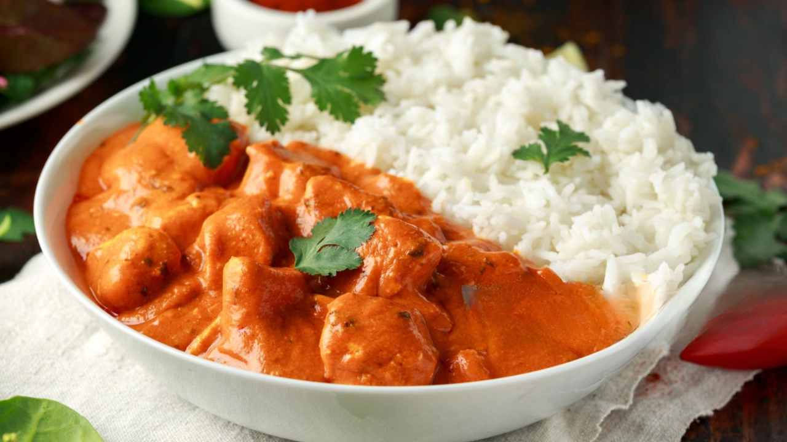

Mafé or maffé or maafé (or tiga dèguè na, peanut paste sauce, in Mandingo) is a traditional culinary specialty of Malian, Senegalese and Guinean cuisine, extended to West African cuisine, based on pieces of meat or fish cooked in a peanut sauce with peanut paste (or peanut butter)
Mafé is cooked with pieces of meat or fish, simmered with vegetables, tomato, onion, peanut oil, peanut paste, aromatic herbs, and spices.